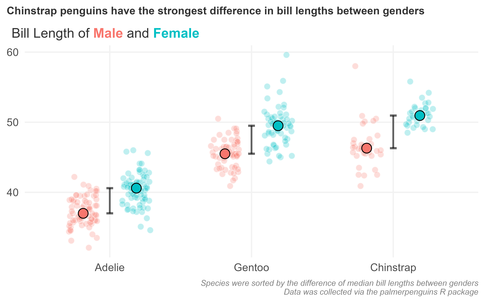
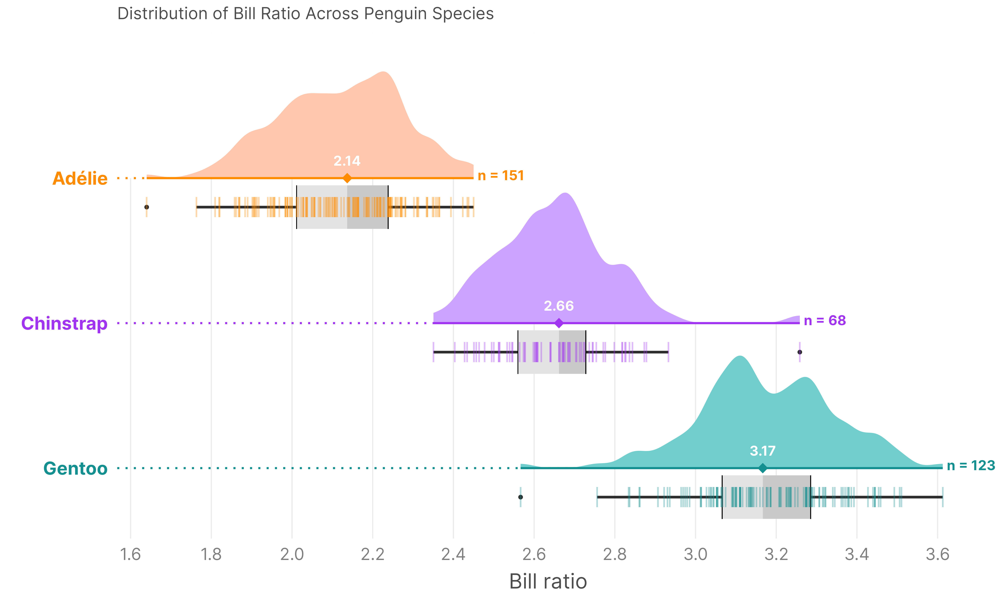

Topics Covered
Custom Theme Building
Build a reusable ggplot2 theme from scratch — typography, gridlines, captions, and legend control with theme_minimal().
Jittered Dot Plots
Use geom_point() with position_jitterdodge() to reveal distributions within groups, avoiding overplotting.
Factor Reordering
Sort categorical axes by computed statistics using fct_reorder() — e.g. by gender gap in median bill length.
Polished Figures
Overlay median markers, connector lines, and HTML-styled subtitles with ggtext to eliminate legends entirely.
Key Concepts
- Building a custom theme: element_text(), element_markdown(), element_blank(), and rel() for relative sizing
- Jitter + dodge: position_jitterdodge(seed = ...) for reproducible point spreads within grouped categories
- Reordering factors by a computed summary statistic with fct_reorder() and a lambda function
- Layering summary statistics: geom_line() for median connectors, geom_point() for median dots, shape = '-' for tick marks
- Colour-coding text in subtitles with ggtext's element_markdown() — replacing the legend with inline HTML spans
- Exporting publication-quality figures with ggsave() at 600 DPI
Scripts
📄 penguins_stepbystep.R
Build up the final plot step by step — data prep, jitter layer, median points, connector lines, custom theme, and ggsave export.
📄 raincloud_penguins_final.R
Advance your visualization skills with raincloud plots — combining density distributions, raw data points (jitter), and summary statistics into a single high-impact figure.
Visual Output

Chinstrap penguins show the strongest gender gap in bill length — generated by penguins_stepbystep.R

Raincloud plots provide a comprehensive view of data distributions (density, raw data, and IQR) — generated by raincloud_penguins_final.R
Homework
📄 02_scatter_plots.R
Learn the grammar of graphics ecosystem and build scatter plots layer by layer mapping variables to visual aesthetics.
📄 03_boxplots.R
Build box plots, overlay raw data with jitter, and combine fill groups with jittered points to interpret distributions.
📄 04_styling.R
Understand how to apply and compare built-in themes, format axes, and compose a publication-ready chart from scratch.
📄 05_contest_msleep.R
A programming contest applying everything learned: data cleaning, scatter plots, faceted plots, and visual polish using the mammals sleep dataset.